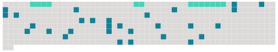

Longueur nb maillons : 33 mentions |
  |
[ article ] C'est avec peine que la commune appris le décès de [Monique Barbier] , à l'âge de 74 ans. [Figure bien connue de la rue Jean-Jaurès] où [elle] habitait avec Jacques, [son] époux, [elle] était née Dugny, le 28 avril 1927, à Andernay.
[Elle] était la quatrième enfant, et seule fille, d'une famille de six -deux de [ses] frères sont décédés accidentellement il y a quelques années. [Ses] parents exerçaient le métier d'agriculteurs. [Monique] , [qui] avait obtenu un diplôme de couturière après un stage au lendemain de la guerre, a travaillé à la ferme familiale jusqu'à [son] mariage le 30 avril 1953 avec Jacques Barbier, un jeune Vassincourtois, monteur en chauffage dans une entreprise locale. [1 phrases] Outre l'occupation que [lui] procurent [ses] enfants, [Monique] a également pris beaucoup de plaisir à s'investir dans la vie associative locale, notamment au sein de la Croix-Rouge et du Secours catholique. Avec l'association de loisirs des retraités revinéens, [elle] aimait s'occuper des sorties à la piscine.
Proche des autres, [elle] donnait [son] sang -médaillée d'ailleurs pour [sa] régularité -; alors qu' [elle] ne pouvait plus, [elle] aidait à préparer le réconfort des autres donneurs.
Bien avant la retraite, [elle] entretenait avec ardeur [son] jardin, mais [laissait] de la place aux loisirs, [visitant] le monde avec [son] mari, jusqu'en Tunisie, Yougoslavie, aux Antilles ou encore au Canada. Hélas, la maladie est venue tout gâcher prématurément et en octobre 2000 que Jacques s'est rendu à l'évidence qu' [elle] devait être hospitalisée, les symptômes de la maladie d'Alzheimer ayant été diagnostiqués.
Depuis, [son] mari s'investissait fortement auprès d' [elle] , principalement au sein de l'association Alzheimer 55, dont il est membre à l'hôpital de Bar-le-Duc ; et à qui chacun pourra effectuer un don en guise de dernier adieu à [Monique] - [sa] famille ne souhaitant pas d'autre forme de manifestation avant [sa] crémation, qui suivra les obsèques célébrées aujourd'hui à 15 heures, en l'église Saint-Joseph. |
 |
La ressource peut être téléchargée sur la page Ortolang
Si vous avez des questions ou vous voyez des erreurs, merci d'envoyer un mail à silvia.federzoni89@gmail.com
Site développé par S. Federzoni (contact)